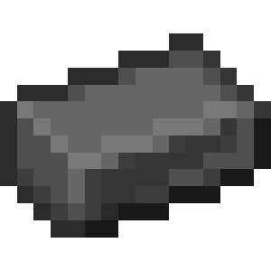

Home
Wikipedia
Heavy Iron

Appearance
It's stronger than Iron. You can craft with it
Heavy Iron Armor
and
Legendary Armor
.
How to get.
To get that you need to smelt
Raw Heavy Iron
, which takes 15 seconds.